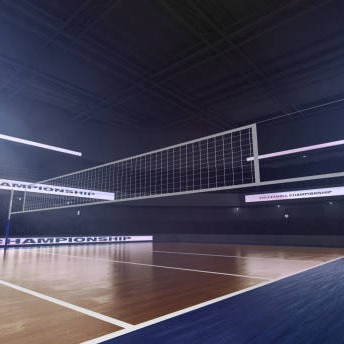

 <!-- <ul>
    <li>
      <h3>Serving:</h3> The serve is the first hit of each rally and is used to start the game. There are several
      different types of serves, including the float serve, the jump serve, and the jump float serve.
    </li>
    <hr>
    <li>
      <h3>Passing:</h3> Passing is the act of receiving the ball from the serve or from an opponent's hit. It is usually
      the first touch in a team's three-touch sequence. A good pass is essential to setting up a successful attack.
    </li>
    <hr>
    <li>
      <h3>Setting: </h3>Setting is the second touch in a team's three-touch sequence. It involves using the fingertips
      to place the ball in the air for a teammate to attack.
    </li>
    <hr>
    <li>
      <h3>Spiking:</h3> Spiking is the act of hitting the ball forcefully over the net into the opponent's court. It is
      usually done with a powerful swing of the arm and is the most exciting aspect of the game.
    </li>
    <hr>
    <li>
      <h3>Blocking: </h3>Blocking is the act of jumping up at the net to intercept the opponent's attack. A well-timed
      block can deflect the ball back into the opponent's court or cause them to make an error.
    </li>
    <hr>
    <li>
      <h3>Digging:</h3> Digging is the act of making a defensive play by diving or sliding to the ground to save a ball
      that is about to hit the floor. It is a critical skill in the game, as it can keep the rally going and prevent the
      other team from scoring.
    </li>
    <hr>
    <li>
      <h3>Hitting:</h3> Hitting is a general term that refers to any attack that sends the ball over the net into the
      opponent's court. It includes spiking, tipping, and rolling shots.
    </li>
    <hr>
    <li>
      <h3>Tipping:</h3> Tipping is a softer, more finesse-based attack that involves lightly tapping the ball over the
      net and into the opponent's court. It is often used to surprise the defense or to place the ball in an empty spot
      on the court.
    </li>
    <hr>
    <li>
      <h3>Roll shot: </h3> A roll shot is a type of attack that involves rolling the ball off the fingertips and over
      the block. It is used to avoid the block or to place the ball in a specific location on the opponent's court.
    </li>
    <hr>

    <li>
      <h3>Jumping:</h3> Volleyball is a sport that requires a lot of jumping, both for attacking and for blocking.
      Players need to have good jumping ability and be able to jump multiple times in a row without getting tired.
    </li> -->


     <!-- <ul>
           <li><h3>Ball:</h3> The volleyball is the primary piece of equipment used in the game. It is made of leather or synthetic leather and is designed to be light and easy to handle.
        </li> <hr>
        
       <li> <h3>Net:</h3> The volleyball net is a mesh barrier that divides the court in half. It is held up by two poles and is 2.43 meters (7 feet 11 5/8 inches) high for men and 2.24 meters (7 feet 4 1/8 inches) high for women.    </li><hr>
        <li><h3>Antennae:</h3> The antennae are two thin rods that extend vertically from the top of the net and are used to mark the boundaries of the playing area. They must be clearly visible and made of flexible materials.
        </li><hr>
        <li><h3>Court:</h3> The volleyball court is a rectangular area that measures 18 meters (59 feet) long and 9 meters (29.5 feet) wide. It is divided into two equal halves by the net.        </li><hr>
        
       <li> <h3>Lines:</h3> The volleyball court is marked with boundary lines that define the playing area. The sideline measures 18 meters (59 feet) long, and the end line measures 9 meters (29.5 feet) wide.    </li><hr>
        <li><h3>Shoes:</h3> Volleyball shoes are designed to provide good traction on the court and support for jumping and lateral movement. They should have a non-marking sole to prevent damage to the playing surface.        </li><hr>
       <li><h3> Knee pads</h3>: Knee pads are worn by many players to protect their knees when diving or sliding on the court. They are made of foam padding and come in a variety of sizes and styles.    </li><hr>
        <li><h3>Uniforms:</h3> Volleyball uniforms consist of shorts and a jersey or tank top. They should be comfortable and allow for a full range of motion.</li><hr>
       <li><h3> Scoreboard:</h3> A scoreboard is used to keep track of the score during a volleyball match. It should be clearly visible to both teams and the spectators.    </li><hr>
       <li> <h3>Whistle:</h3> The referee uses a whistle to signal the start and end of each rally and to indicate when a player has committed a fault. The whistle should be loud and clear, so it can be heard over the noise of the crowd.</li><hr>
    </ul> -->